Text & Konzeption
Planted
Planted ist heute eine der bekanntesten Marken für pflanzenbasiertes Fleisch – und wir waren von Anfang an dabei. Wir begleiteten den Aufbau der Marke: vom Corporate Design über Packaging bis hin zu Social Media und Kampagnen in der Schweiz und in Deutschland.

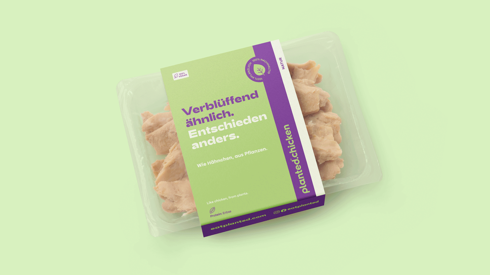
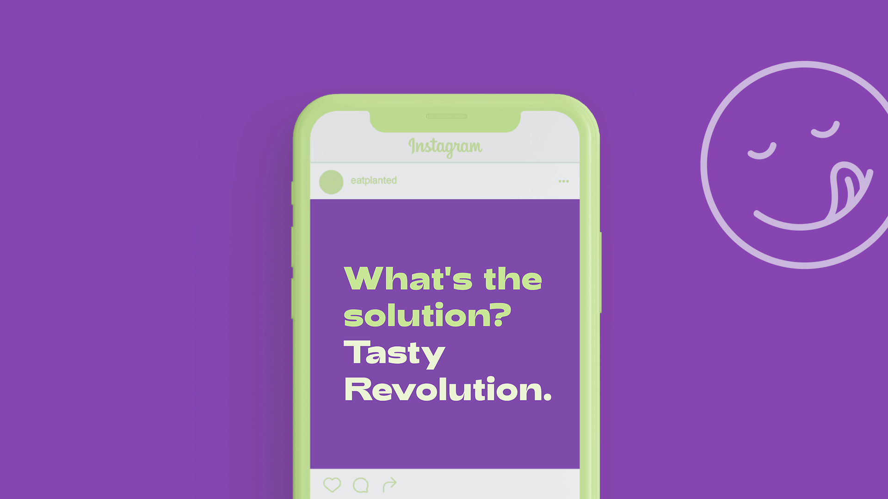


Für den Launch in Deutschland setzten wir zusätzlich mit der #TastyRevolution ein Zeichen: Demonstrierende Hühner zogen durch mehrere Städte und machten Planted als das Produkt für pflanzenbasierten Genuss sichtbar.
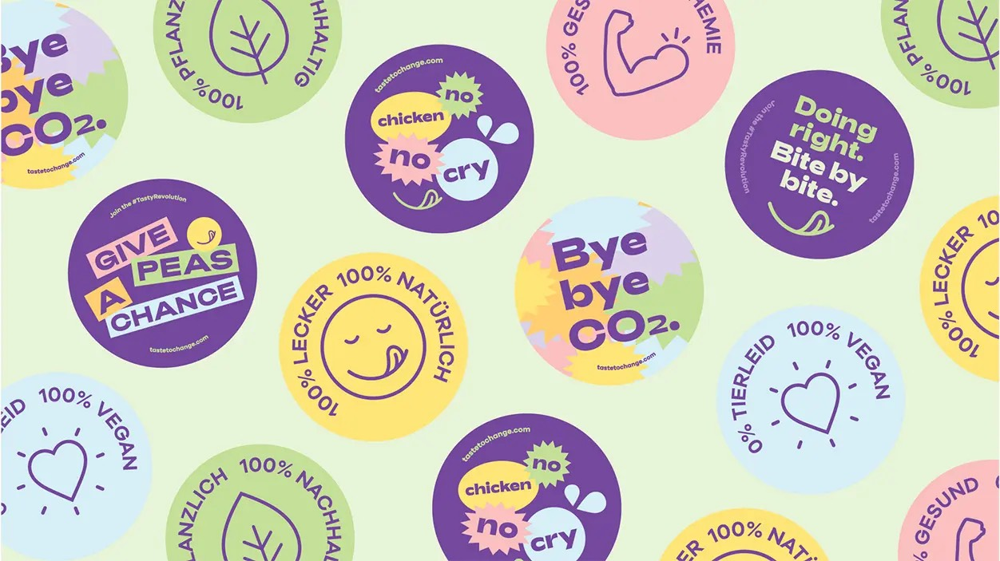
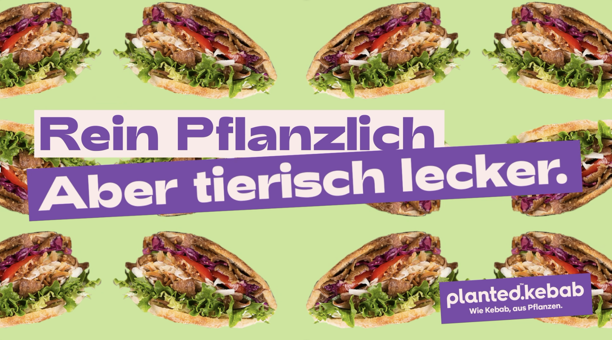
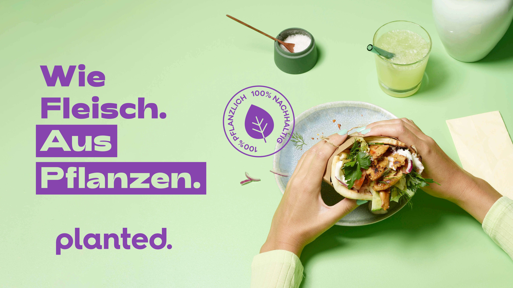
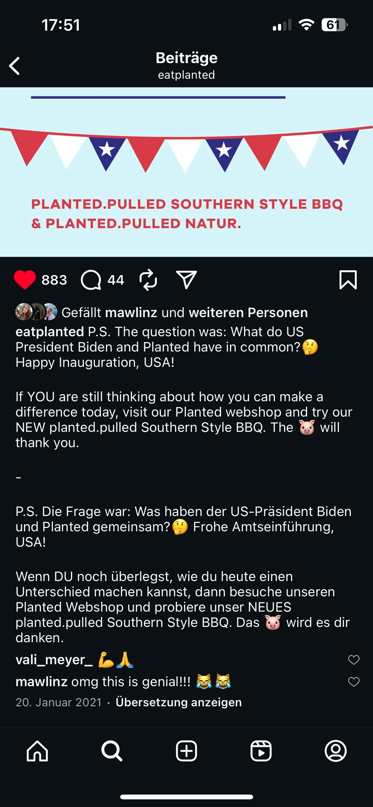
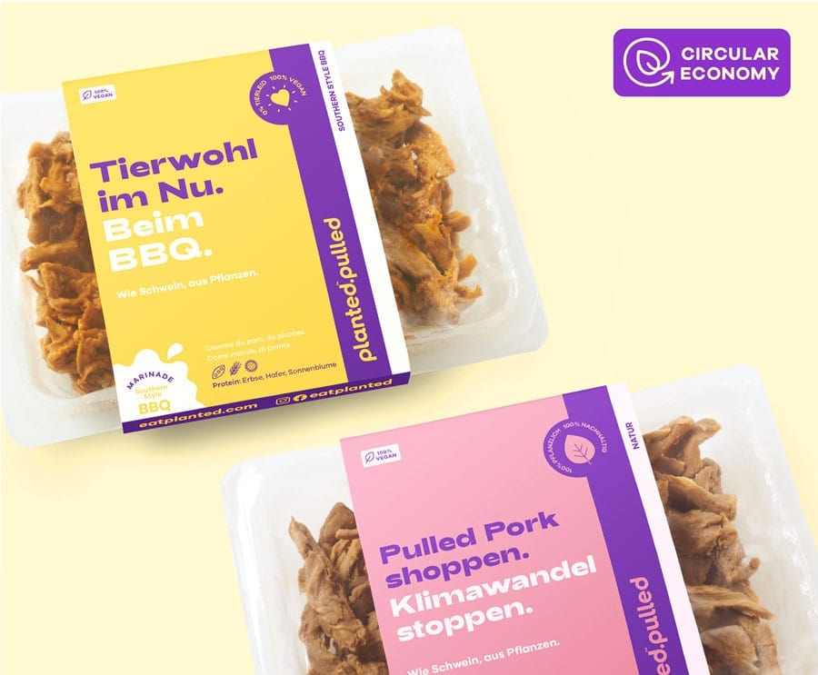
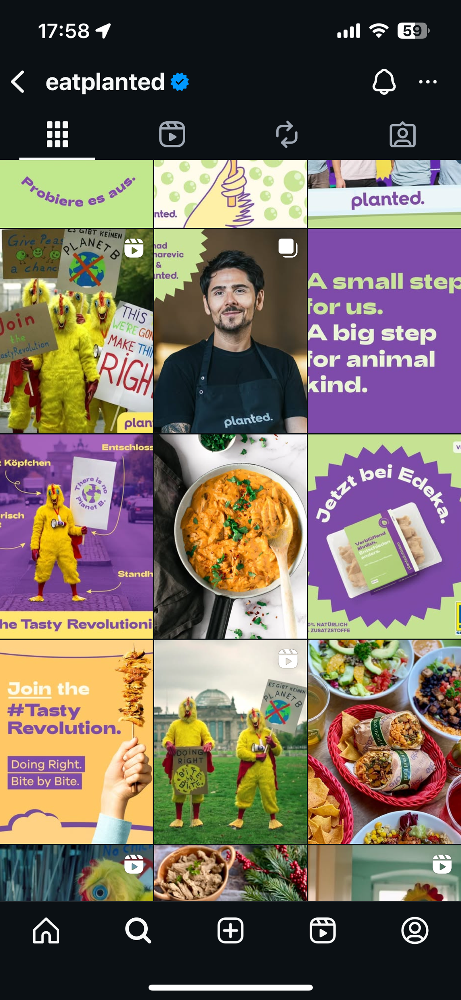
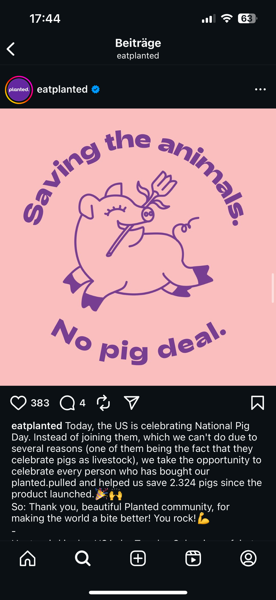
Als Planted seine beiden Pulled-Pork-Produkte auf den Markt brachte, entschied sich in den USA gerade der Wahlkampf, bei dem sich Joe Biden gegen Donald Trump durchsetzte. Ich nutzte die Gelegenheit, um die beiden Fleischersatzprodukte und den Wahlkampf zu verbinden.
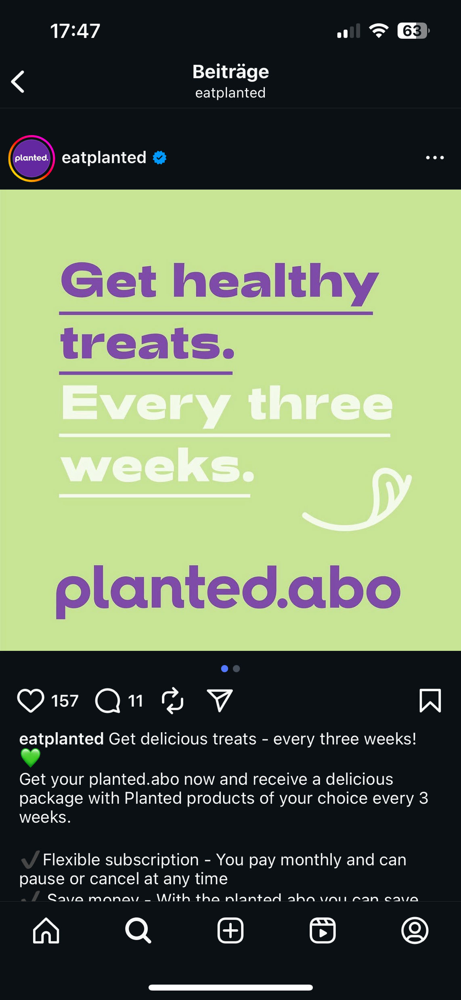
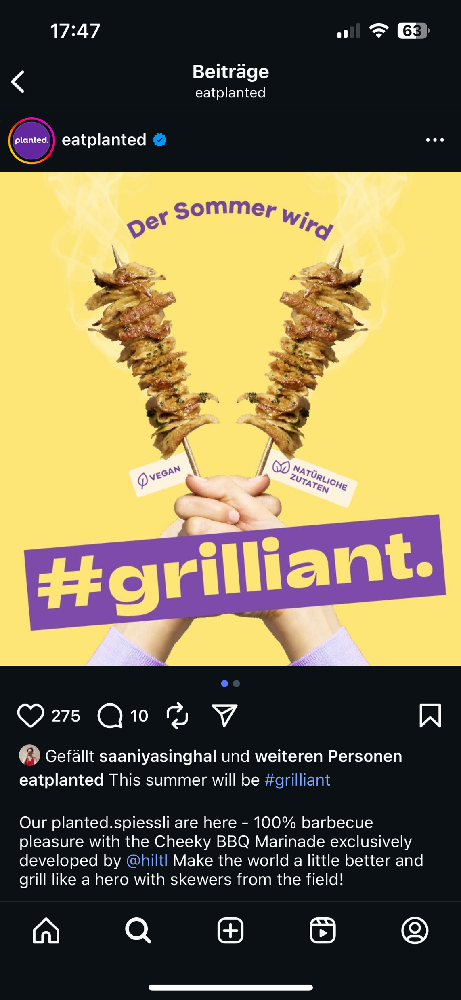
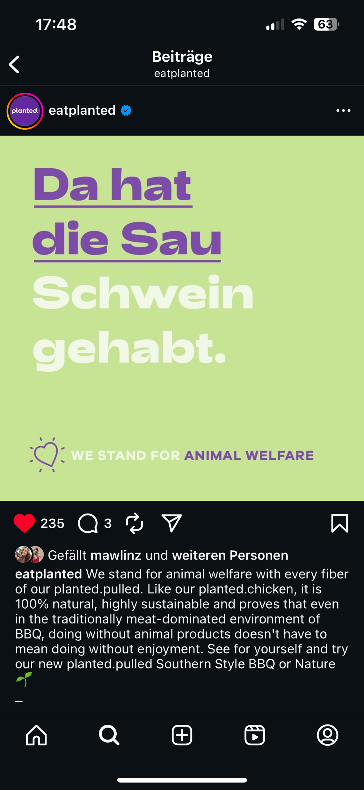
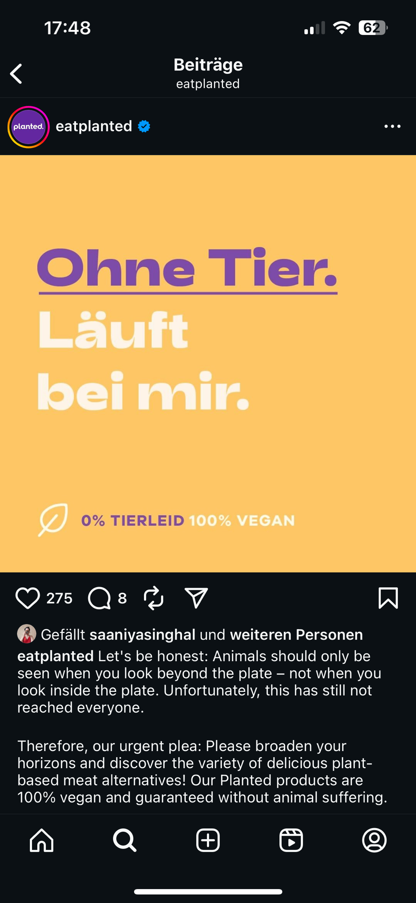
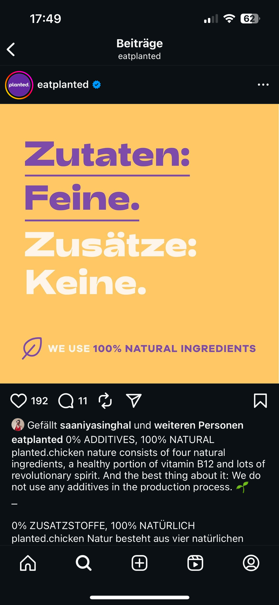
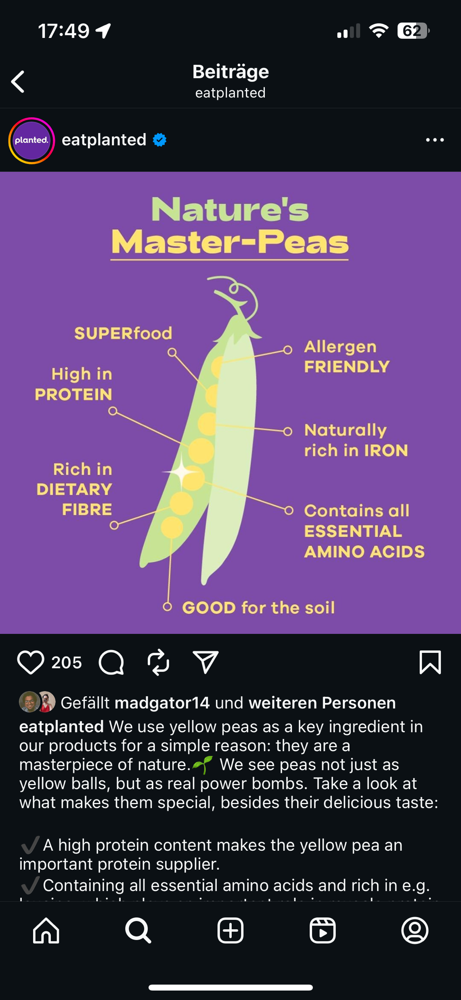
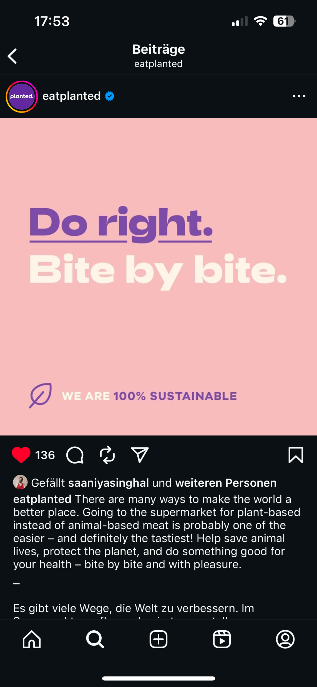